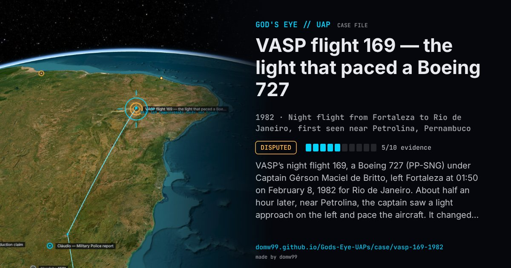

VASP flight 169 — the light that paced a Boeing 727

VASP’s night flight 169, a Boeing 727 (PP-SNG) under Captain Gérson Maciel de Britto, left Fortaleza at 01:50 on February 8, 1982 for Rio de Janeiro. About half an hour later, near Petrolina, the captain saw a light approach on the left and pace the aircraft. It changed colour between red and orange around a white and bluish centre, seemed to move above and below the airliner, and stayed with it past Belo Horizonte; at 31,000 ft the crew said a bluish light filled the cabin. Britto called the air-traffic and air-defence centre CINDACTA in Brasília, which had no traffic there, dimmed his lights and flashed his landing lights at it, and woke the passengers; one compared it to a mercury street lamp. CINDACTA later said its radar showed a return about eight miles from the aircraft, and crews of a Transbrasil and an Aerolíneas Argentinas flight reported seeing something. The light was lost in cloud over the Serra do Mar a few minutes before landing at Galeão. The case was examined in the Journal of Scientific Exploration in 2014, which concluded that the “object” was Venus, very bright in the eastern pre-dawn sky.
Explanation
A study in the Journal of Scientific Exploration (2014) concluded the light was the planet Venus, rising brilliantly before dawn and possibly distorted by an atmospheric mirage. The captain rejected that, saying he knew Venus and the Moon; a radar return the air-traffic centre reported near the airliner has never been documented in detail.
What was seen
Shape: A bright light changing from red to orange, with a white and bluish centre
Witnesses: Captain Gérson Maciel de Britto, his co-pilot and many passengers; crews of two other airliners
Duration: About two hours
Sources
- The VASP-169 flight Brazilian episode revisited — Journal of Scientific Exploration 27(4) (PhilArchive record)
- Patrick Gross — VASP 169, February 8, 1982
Browse
- Brazil
- 1980s
- Disputed
- Aviation encounters
- Many independent witnesses
- Pilot and aircrew witnesses
- Radar tracking
- Lights and fireballs